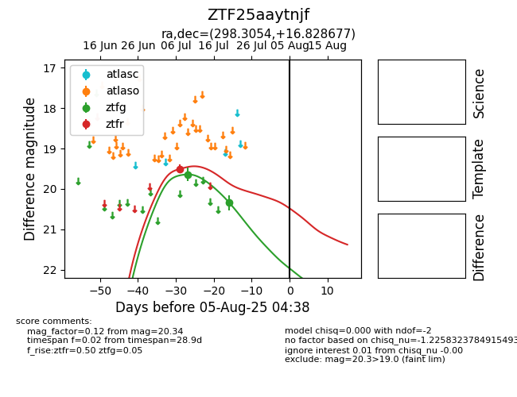

Target ZTF25aaytnjf at 2025-08-05 04:38, see:
FINK: fink-portal.org/ZTF25aaytnjf
Lasair: lasair-ztf.lsst.ac.uk/objects/ZTF25aaytnjf
ALeRCE: alerce.online/object/ZTF25aaytnjf
alt names
ZTF25aaytnjf (ztf,fink)
coordinates:
equatorial (ra, dec) = (298.3054,+16.82868)
galactic (l, b) = (54.9931,-5.44358)
photometry
last ztfg=20.34, ztfr=19.50
2 ztfg, 1 ztfr detections
